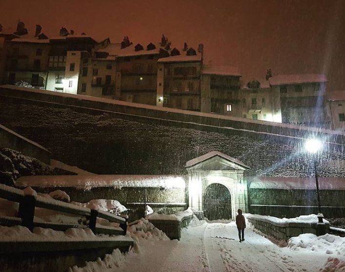

Une aventure extraordinaire dans la vieille ville de Briançon. Voyagez à travers le temps, et visitez la cité Vauban autrement. Laissez-nous vous effrayer et vous surprendre en vous guidant à travers les ruelles et les passages. Découvrez l'histoire sombre et les légendes de Briançon!
Vous serez transportés par les histoires des Celtes qui se sont installés dans cette région il y a 2000 ans. Les récits des incendies qui ont ravagé la ville à deux reprises, la rencontre de sorcières, et bien plus encore. Ecoutez les musiques et les ambiances sonores pour une expérience inoubliable. Briançon Fantômes n'est pas pour les timides!
Lorsque vous achetez l'audio sur notre site vous recevez l'audio et une carte de pdf. Vous pouvez telecharger l'audio avant car le WiFi dans la vieille ville et pas le meilleur. Vous aurez besoin d'un smartphone, d'un casque et Internet/Data.
Briançon Fantômes prend entre 60-90 minutes pour completer la balade. Nous vous recommandons de le faire en fin d'après-midi ou en soirée car l'atmosphère dans la vieille ville de Briançon est mystique à la tombée de la nuit.
En achetant cette expérience de théâtre audio, vous acceptez ce qui suit : si vous vous blessez, perdez connaissance, perdez vos fausses dents, contractez la peste, vos cheveux blanchissent de terreur ou tout ce qui pourrait nuire à votre santé - sera de votre responsabilité!